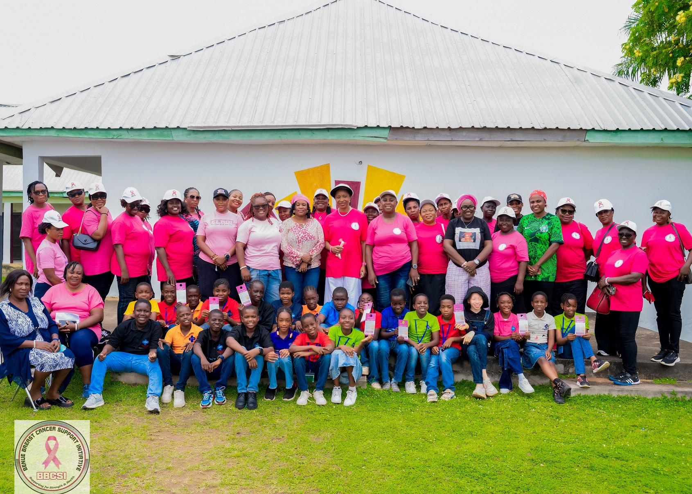
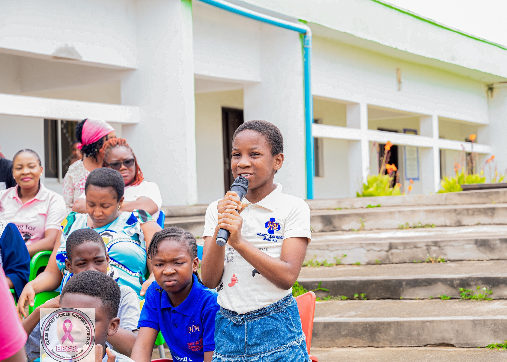
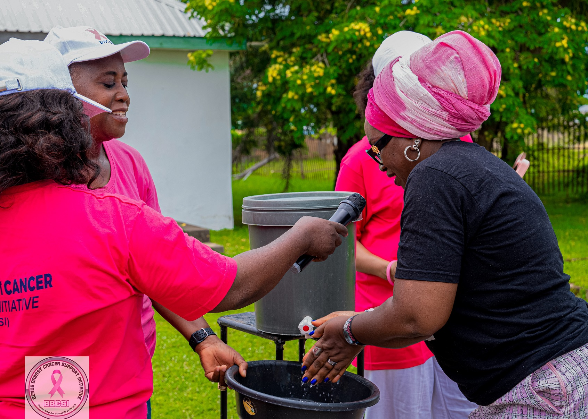
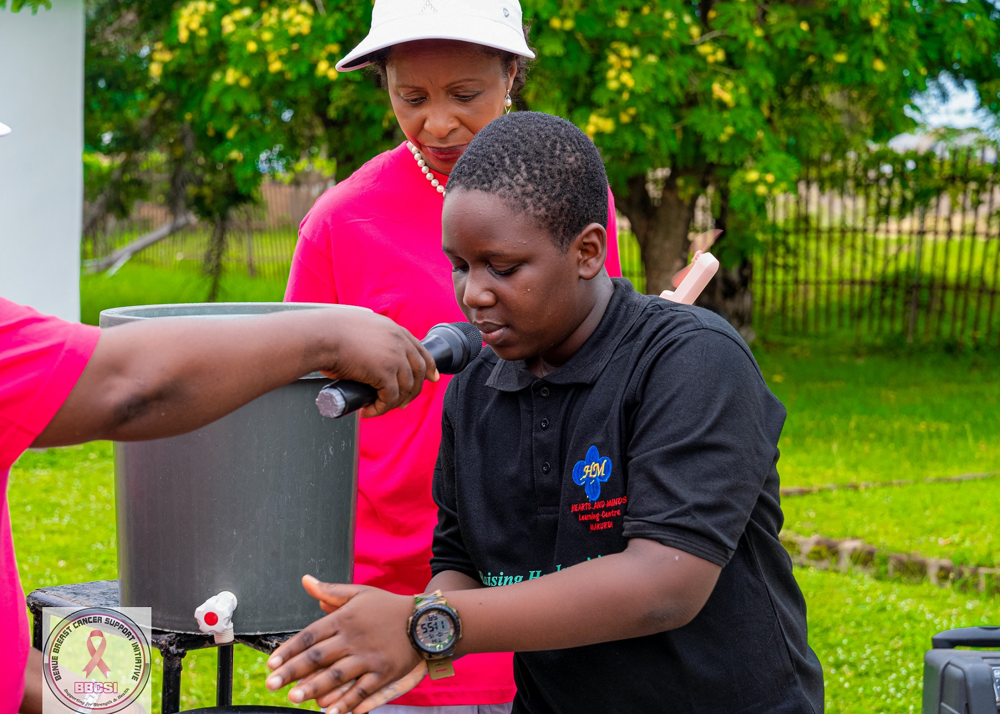

BBCSI at 10: A Decade of Impact
Day Four: Catch Them Young! BBCSI Takes Breast Cancer Awareness and Handwashing Education to Hearts & Minds School, Wadata
Published: · Makurdi, Benue State · BBCSI Communications Team

The journey of awareness, education and community engagement continued on Day Four of the 10th anniversary celebration of the Benue Breast Cancer Support Initiative (BBCSI), as the organisation took its health education campaign to the young and enthusiastic pupils of Hearts & Minds School, located behind Kwararafa Quarters, Wadata, Makurdi.
The school, run by Mrs. Ade Ackaa, provided a welcoming environment for an interactive and educational engagement aimed at equipping students with basic knowledge about breast cancer awareness and the importance of sharing health information with their family members. For BBCSI, the visit was guided by a simple but powerful belief: when children are educated, families and communities can become better informed.
Catch Them Young: Making Children Ambassadors of Awareness
During the visit, BBCSI delegates sensitised the students about breast health, explaining the importance of early detection and encouraging them to become channels through which useful health information could reach their homes.
Rather than limiting the message to the classroom, the students were encouraged to share what they learnt with their parents, particularly their mothers and other female family members. BBCSI emphasised that awareness should not be confined to hospitals, health centres or public campaigns. Schools and homes are equally important spaces for spreading life-saving health information.
To reinforce this message, the students were presented with specially designed breast awareness door hangers containing simple instructions on breast self-awareness and checking the breasts for unusual changes. The door hangers were intended to serve as practical educational materials that the children could take home, share with their parents and use as conversation starters about breast health.
Through this initiative, BBCSI sought to extend the reach of its awareness campaign beyond the school environment and into individual households.

International Handwashing Day: Promoting Healthy Hygiene Habits
Interestingly, the school visit coincided with International Handwashing Day, October 15, and BBCSI seized the opportunity to broaden the health education session by demonstrating proper handwashing procedures. The delegates took the students through the importance of regular and effective handwashing as a simple but essential practice for preventing the spread of infections and maintaining good personal hygiene.
The demonstration highlighted the need to wash hands properly, particularly:
- Before eating
- After using the toilet
- Whenever hands become visibly dirty
The students were shown the appropriate steps involved in effective handwashing, turning the occasion into a practical learning experience. It was a fitting addition to the day’s activities, reinforcing BBCSI’s belief that promoting healthier communities begins with equipping individuals with the knowledge and habits needed to protect their health.


An Engaging and Interactive Session
One of the most encouraging highlights of the visit was the students’ enthusiastic participation. The children were highly interactive throughout the engagement, responding to questions, asking questions of their own and demonstrating genuine interest in the topics being discussed. Their enthusiasm made the session lively and rewarding, showing the value of introducing health education to children in an engaging and age-appropriate manner.
The level of participation also reinforced the importance of taking awareness programmes into schools, where young people can learn, ask questions and become advocates for positive health practices within their families.
Extending the Message Beyond the Classroom
For BBCSI, the visit to Hearts & Minds School was more than a routine sensitisation exercise. It was an intentional investment in the future of community health awareness.
By encouraging students to take breast health information home, the organisation demonstrated how children can serve as important links between health educators and families. A simple door hanger, a classroom discussion or a practical handwashing demonstration can become the starting point for meaningful conversations within households. The initiative hopes that the knowledge shared during the visit will travel beyond the school gates, reaching parents, relatives and other members of the community.
A Future Built on Knowledge and Awareness
As BBCSI celebrates ten years of advocacy, the Hearts & Minds School visit reflects the organisation’s commitment to innovative approaches to health education and grassroots awareness. The experience also reinforces an important lesson: awareness is most effective when people are empowered to share what they know.
BBCSI appreciates the management and staff of Hearts & Minds School, particularly Mrs. Ade Ackaa, for providing the opportunity to engage the students and contribute to their health education. BBCSI also commends the students for their enthusiasm, curiosity and active participation.
When we educate one child, we create an opportunity to educate an entire family. When that knowledge is shared, awareness grows and communities become stronger.
#BBCSI@10: Celebrating the Journey, Strengthening the Mission, Inspiring Hope!